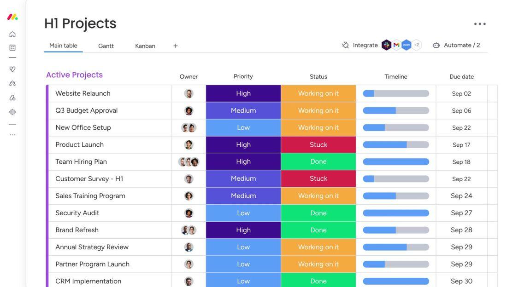
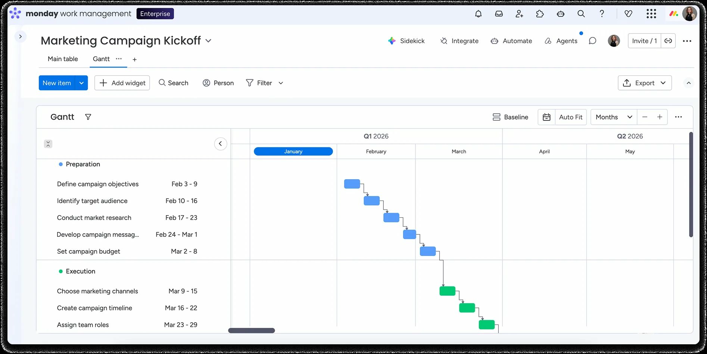
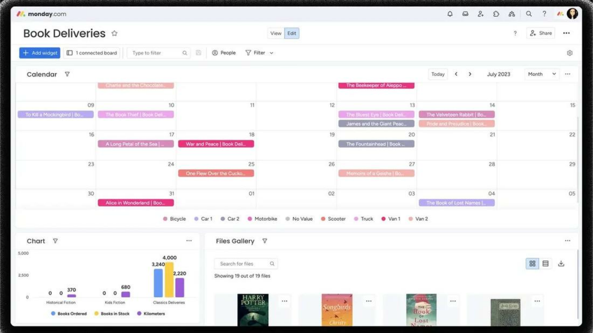

monday.com Review: The One We Wanted to Pick
Try it: Visit monday.com (affiliate link: we may be paid if you sign up, at no extra cost to you).
6.9 Sensible Score, out of 10
Ratings by business type
Best suited to: growing teams, marketing and operations teams, agencies, and any business where non technical people must adopt the tool without a fight.
Scored on our ten metric Sensible Score. See How We Rate for the method and what each number means.

Sensible Stack: Streamlining business, whatever your size
The short answer
monday.com has the best first impression in project software. The UX/UI is simple, colourful and immediately legible, the Gantt is good, and a new user is productive in minutes rather than days. Then the pricing department gets involved: every paid plan carries a three seat minimum, so a solo user pays for three seats to sit alone. Our reviewer liked it most and chose something else. That sentence is the whole review, really. The longer version below covers the two findings that decided it: a subtask progress figure that turns out to be a picture of a number rather than a number, and a seat policy that charges a team of one for a team of three.
What it is
Monday is a board centric work platform. Work lives on boards of items and subitems, with columns for status, people, dates and numbers, and views that turn the same board into a Gantt, a calendar, a workload picture or a dashboard. It is built for adoption: nobody needs a manual to understand a Monday board, which is why it spreads through companies so fast. One caution before the detail: Monday sells several products off the same brand, and this review covers Work Management only. The CRM, dev and service products are separate subscriptions with separate prices, and buying one does not include the others.
Running real projects in it: what actually happened
I tested Monday against the work I actually do: engineering projects, run solo, planned waterfall style. That means a parent task with components underneath it, a budget to keep an eye on, task planning day to day, and a Gantt chart that has to stay honest as dates move. It is not the marketing demo workload, and it is where tools either earn their keep or get found out.
The first impression was the best in this series, and it was not close. The UX/UI is simple to use and easy to get started with: I was running projects in it quickly, without the learning curve tax some rivals charge up front. The Gantt chart was good, with dependencies and a clean timeline feel, and the dashboards were the sort an executive will actually read rather than politely ignore. Left to the product alone, this would have been my choice. I said so at the time and I have not changed my mind since.
Then two things bit, and both of them bit in the same week. The first was progress tracking. My projects are built as a parent task with several components under it, and I need the parent's percentage complete to update accurately as the components are marked done. That figure is how I report where a job stands. Monday shows a coloured summary bar on the parent item, and if you hover over it you get percentages, which looks like the answer. It is not the answer. The bar is a display, a mirror of the subitem statuses, and the value behind it is not a stored number. It cannot feed a formula, an automation, a dashboard or an export. The only native automation on offer is binary: the parent flips to Done when every subitem is done, which tells you nothing until the day it tells you everything. For the way I report progress, the number I needed did not exist, and getting a real one means paying for a third party roll up app on top of the subscription.
The second bite was the bill. The tier I wanted was Pro, and Pro is sold in blocks of seats with a three seat minimum, like every paid Monday plan. For one person that worked out at roughly $60 a month at the prices then running, for one chair occupied and two standing empty. At today's checked prices the same floor is $57 a month billed annually. I would have lived with the progress tracking compromise if a one seat Pro existed. It does not. So the tool I liked most lost to arithmetic, which is a frustrating way for a good product to lose.
Where it wins
- The UX/UI, straight off the bat. Simple to use, easy to get started and running with projects, and productive in minutes. On the independent numbers this is not just our taste: G2 ease of use scores put Monday at 9.1 against Asana's 8.6, and reviewers consistently rate it the fastest onboarding in the category
- A good Gantt chart, with dependencies and a clean timeline feel. One tier gate to know before you fall for it in a trial: the Gantt, Timeline and Calendar views arrive on Standard at $12 per seat, not on Basic
- Dashboards an executive will actually read. Boards roll up into visual dashboards with little effort, and the client and exec reporting story is one of Monday's real strengths. The caps are concrete: a dashboard can draw on 1 board on Free and Basic, 5 boards on Standard, 20 on Pro and 50 on Enterprise
- Range. The same boards pattern stretches from project tracking to a light CRM to intake forms, which is why teams keep finding new uses for it
- Guests arrive on Standard, the first three free, which softens the per seat maths when the extra people only need to look and comment rather than run boards of their own

Where it frustrates
- Subtask progress is a display, not a number. Monday can show a coloured summary bar on the parent item, with percentages if you hover, but that value cannot feed a formula, an automation, a dashboard or an export. The only native automation is all or nothing: the parent flips to Done when every subitem is done. A project manager who runs a parent task with components under it and wants an honest percent complete will not get one without a third party app
- The three seat minimum. Basic is $9 per seat per month billed annually, Standard $12, Pro $19, and every one of them starts at three seats. Worse, seats are sold in buckets of 3, 5, 10 and up, so a team of four pays for five seats. The realistic solo floor for Pro is $57 a month, for one person sitting in three seats
- Basic is thinner than the headline price suggests. At $9 per seat it has no automations and no integrations at all, and no Gantt or Timeline view. Anything that makes work move on its own starts on Standard
- The automation allowance jumps in a cliff, not a slope. Standard allows 250 automation actions and 250 integration actions a month, counted separately. A handful of busy boards notifying each other can eat 250 actions quickly. Pro raises both allowances to 25,000, a hundredfold jump with nothing in between, so the tier choice is often made by this one number
- The features that make it sing sit up the tiers, so the gap between the demo and the invoice can surprise you
The AI, and its price tag
Monday meters its AI in monthly credits that scale by plan: 1,000 on Basic, 2,000 on Standard and 3,000 on Pro, spent on AI columns, automations and assistant features. Two details matter more than the headline numbers. First, the credits are shared across the whole account, not issued per seat, so a three seat account on Basic splits the same 1,000 credits three ways. Second, AI credits and automation actions are separate meters: an AI driven automation can draw on both, which is how an active account discovers it has run out of two different things in the same month. The AI itself is woven into the plans rather than sold as a separate add on, which is tidier than ClickUp's approach of bolting on a paid AI package. Our duplication warning still applies at the margin: the writing and summarising tricks overlap with a general AI subscription you may already pay for, while the in board automation uses are Monday's own and cannot be replaced by a chatbot sitting in another tab.
Reporting and dashboards
This is one of the places Monday earns its money. Dashboards pull from multiple boards, the widgets are genuinely visual, and a progress view for clients or executives takes minutes to assemble. If your projects need to be shown to people who will never open the project plan, Monday makes you look organised with very little effort. The limits are worth knowing before you design around them: one board per dashboard on Free and Basic, five on Standard, twenty on Pro, fifty on Enterprise. A growing business reporting across a dozen live projects is therefore a Pro customer whether it planned to be or not. And one honest caveat that connects back to the main frustration: a dashboard can only chart numbers that exist. Because the subitem summary is a display value rather than a stored number, no dashboard widget will rescue your percent complete figures. The reporting looks excellent, and on progress roll ups it is reporting on a number the system never actually kept.

Pricing
Checked November 2026, against Monday's own pricing page and plan documentation. Work Management plans, per seat per month. Monthly billing exists on every tier and costs more: $12 for Basic, $14 for Standard and $24 for Pro, against the annual figures below.
| Plan | Per seat, per month, billed annually | Minimum seats | Automation and integration actions | AI credits per month | The gate that matters |
|---|---|---|---|---|---|
| Free | $0 | Up to 2 seats | None | None | 3 boards and 200 items across the account, 500 MB of storage, dashboards limited to 1 board each |
| Basic | $9 | 3 | None | 1,000, shared account wide | Unlimited boards and items, but no automations, no integrations and no Gantt or Timeline view |
| Standard | $12 | 3 | 250 of each, per month | 2,000, shared account wide | Gantt, Timeline and Calendar views arrive here, plus guest access and dashboards across 5 boards |
| Pro | $19 | 3 | 25,000 of each, per month | 3,000, shared account wide | Time tracking, private boards, formula and dependency columns, dashboards across 20 boards |
| Enterprise | Custom, by quote | By quote | Up to 250,000 of each, per month | Matched to usage | SSO, audit log and governance controls, dashboards across 50 boards |
What that means in money, at the sizes small businesses actually buy. Totals are per month on annual billing, before tax:
| Seats bought | Basic | Standard | Pro |
|---|---|---|---|
| 3 | $27 | $36 | $57 |
| 5 | $45 | $60 | $95 |
| 10 | $90 | $120 | $190 |
Read the seat column carefully. Seats are sold in buckets of 3, 5, 10, 15 and up, so the team sizes in this table are the sizes Monday sells, not the sizes businesses come in. A team of four buys five seats. A team of one buys three.
That last point deserves its own paragraph, because it decided this review. A solo user cannot buy one seat of anything. The floor for Pro is $57 a month billed annually, $72 a month if you insist on monthly billing at $24 a seat, and even the entry Basic plan starts at $27. None of this makes Monday bad value for a team of five or ten, where the per seat price is competitive and the product is excellent. It makes the pricing structure a team product's structure, and a solo buyer is paying a team tax from the first invoice.
A note on that Solo score, because it needs one: Monday can be good for a solo person. It depends on the features you want and whether you accept paying the three seat price for them. If the answer is yes, treat the Solo rating as a 7 and enjoy it. If paying for two empty chairs annoys you on principle, it will annoy you every month.
If Monday is not the one: the alternatives
Three tools from this series cover the same ground with different compromises. Each score below is the Sensible Score from its own full review on this site.
- ClickUp, Sensible Score 7.1. The customiser's alternative: customisation on a par with Notion and a UX/UI that is easy from the first click, priced per user with no three seat floor. The catch is gating in the other direction: the professional Gantt depth, critical path and baselines, is fenced into its top tier, and its progress roll up only climbs one level
- Notion, Sensible Score 7.1. What our reviewer actually chose. Unmatched customisation, documents and projects in one place, and a free tier a solo user can genuinely live on. The price is a real learning curve, no native Gantt, and progress percentages you have to build yourself with rollups and formulas
- Asana, Sensible Score 6.8. The structured team alternative: the same class as Monday, a step behind on first impression UX/UI, stronger once a team needs hierarchy and cross project control. Its billing has its own version of the empty chair problem, with seats sold in tiers of 2, 3, 4, 5 and then steps of five
Questions buyers actually ask
Can one person buy monday.com? Not one seat of it. Every paid plan starts at three seats, so a solo buyer pays $27 a month for Basic or $57 for Pro, billed annually. The free plan allows two seats, so a solo user can look around indefinitely, but it caps the account at three boards and 200 items, with no automations and no Gantt view.
Why does subtask progress not roll up into my reports? Because the parent item's summary is a mirror, not a measurement. Monday displays a coloured bar summarising subitem statuses, but the percentage behind it is never stored as a number, so formulas, automations, dashboards and exports have nothing to read. The only native behaviour is the parent flipping to Done when all subitems are done. A stored, reportable percent complete needs a third party roll up app from the marketplace.
What does the free plan actually allow? Two seats, three boards, 200 items across the whole account to start with, 500 MB of file storage and dashboards that can each draw on one board. No automations, no integrations, no AI and no Gantt. It is a fair way to judge the UX/UI, which is Monday's strongest suit, and not a plan a working business will stay on for long.
When does Standard beat Basic? Almost always, for a working team. Basic has no automations, no integrations and no Gantt or Timeline view, so it is a shared board and little more. Standard is the first tier where Monday behaves like the product in the demos. Just watch the 250 automation actions a month: fine for a small team with a few recipes, gone quickly on busy boards, and the next step up is Pro at 25,000.
What happens to my data if I leave? Boards can be exported to Excel or CSV, so the raw work items come with you. What does not travel is the structure around them: automations, dashboard layouts, views and roll up logic stay behind, and the subitem summary figures were never stored numbers in the first place. Treat an exit as a rebuild in the new tool with your data as raw material, not as a migration.
Verdict
The most likeable tool in this series, and the one our reviewer would have chosen with a one seat Pro plan. The product team has done its job beautifully. The pricing team has decided you travel in threes. If you do travel in threes, or fives, or tens, buy it with confidence and start on Standard. If you work alone, read the pricing table once more before the free trial seduces you, because the UX/UI will absolutely try.
Try it: Visit monday.com
Research note: Pricing, seat minimums, automation allowances, AI credits, dashboard board limits and the subitem summary behaviour checked against vendor pages, Monday's own pricing page, plan documentation and pricing FAQ, November 2026. Automation allowances and dashboard limits rechecked November 2026. Usage history is the author's own. First published November 2026.
Watch: the official video
“Manage your projects like a pro with monday.com!”, from the official monday.com YouTube channel.